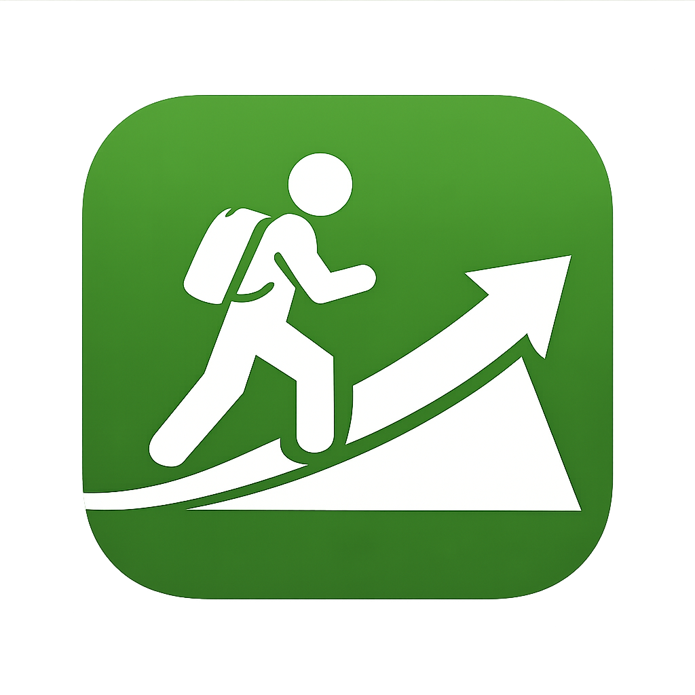

◀

OnHighGround
津波・高潮・洪水から身を守る避難経路案内
📍 現在地設定
現在地を取得
地図上から現在地を手動選択する
手動で現在地変更時に自動で再検索する
手動選択モードON: 地図をクリックして現在地を設定してください。
指定緊急避難場所を地図に表示する
避難場所データを読み込み中...
津波浸水想定
東京都
神奈川県
千葉県
〜0.5m
0.5〜1m
1〜3m
3〜5m
5m超
津波浸水想定レイヤー: OFF
洪水浸水想定
東京都（想定最大規模）
0.5m未満
0.5〜3m
3〜5m
5〜10m
10m以上
洪水浸水想定レイヤー: OFF
高潮浸水想定
東京都
0.3m未満
0.3〜0.5m
0.5〜1m
1〜3m
3〜5m
5m超
高潮浸水想定レイヤー: OFF
内水氾濫
東京都
内水氾濫レイヤー: OFF
土砂災害
東京都
特別警戒区域
警戒区域
土砂災害レイヤー: OFF
現在地:
緯度:
-
経度:
-
標高:
-
m
位置精度:
-
選択中の緊急避難場所:
名称:
-
区分:
-
住所:
-
緯度:
-
経度:
-
移動手段:
-
距離:
-
時間:
-
🚶 ナビ開始
⏹ ナビ停止
🔄 同じ避難先へ再ルート
🔍 避難先を再検索
⚙️ 検索条件
移動手段
徒歩
車
最大移動距離 (m)
必要な標高差 (m)
避難先を検索
地図をクリア
🏃 推奨避難先
🟢 避難可能エリア
🎯 避難先候補一覧
🗺 目的地設定
地図をタップ、または検索で目的地を設定できます
✕ クリア
検索
🧭 ナビモード
🔄 自動再ルート ON
レイヤー
ハザードレイヤー
避難場所
クリア
凡例
凡例
-
×
-
-
📏
-
⏱
-
現在地
避難先検索
総距離
—
|
残り
—
|
出発地点標高
—
|
現在標高
—
現在地ハザード
確認中...
ナビ開始
ナビ停止
最大距離
2000m
高低差
10m
ルートから外れた可能性があります
🔄 同じ避難先へ再ルート
🔍 避難先を再検索
凡例
現在地
推奨避難先 ⭐
避難先（危険区域外）
避難先（危険区域内）
避難先（安全性未判定）
案内中（白い外枠で強調）
指定緊急避難場所
避難可能エリア (RSA)
高潮浸水想定
避難ルート候補1
避難ルート候補2
避難ルート候補3